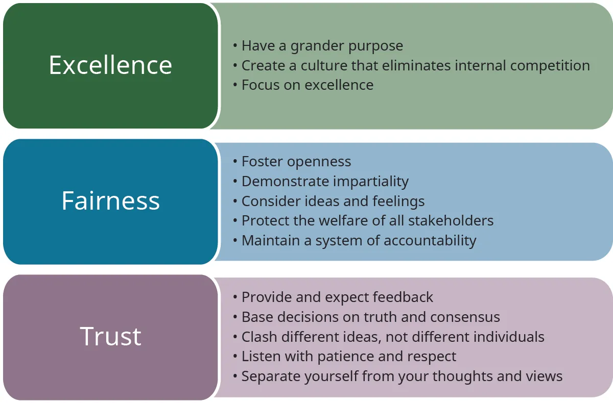

3.3 Developing a Workplace Culture of Ethical Excellence and Accountability
3.3 Phát triển văn hóa nơi làm việc về xuất sắc đạo đức và trách nhiệm giải trình
Learning Objectives
Mục tiêu học tập
Đến cuối phần này, bạn sẽ có thể:
- Mô tả những thách thức nơi làm việc trong văn hóa khởi nghiệp
- Phân biệt cách tiếp cận phản ứng và chủ động trong quản trị đạo đức
- Mô tả nền tảng và khuôn khổ của một văn hóa tổ chức hướng tới sự xuất sắc về đạo đức
- Xác định các thành phần của một nơi làm việc có đạo đức
Các doanh nhân thành công hiểu rằng nơi làm việc ngày nay rất khác so với hai mươi năm trước. Những doanh nhân tiến bộ muốn xây dựng văn hóa xuất sắc về đạo đức, nhưng để làm được điều đó cần hiểu một lực lượng lao động đang thay đổi cả về nhân khẩu học lẫn giá trị. Thế hệ thiên niên kỷ đặc biệt coi trọng công việc phù hợp với niềm tin cá nhân của họ.
Nhiều người lao động thuộc thế hệ thiên niên kỷ thậm chí sẵn sàng nhận mức lương thấp hơn để được làm việc cho một công ty có giá trị kinh doanh tương đồng với giá trị cá nhân của họ. Họ muốn công việc có ý nghĩa, giao tiếp cởi mở, tinh thần hợp tác và một mức cân bằng nào đó giữa công việc và cuộc sống.
Đối với doanh nhân, điều này có nghĩa là phải tạo ra nơi làm việc nơi con người quan trọng ngang với tiền bạc, nơi công việc tốt được ghi nhận, và nơi nhân viên không cảm thấy bị kìm hãm dưới sự lãnh đạo yếu kém.
Entrepreneurial Culture
Văn hóa khởi nghiệp
Một kiểu mẫu thường thấy ở startup là nhà sáng lập lôi cuốn nhưng đòi hỏi cao, có bản lĩnh chịu va chạm và cái tôi mạnh. Những đặc điểm đó có thể hữu ích trong giai đoạn đầu, nhưng khi doanh nghiệp phát triển, họ có thể cần một tinh thần lãnh đạo khác. Lãnh đạo quá hà khắc có thể đẩy người lao động trung thành ra xa, còn nhân viên mới có thể rời đi khi nơi làm việc kém hỗ trợ hơn họ tưởng.
Một câu hỏi then chốt là liệu nhân viên có cảm thấy tự do để lên tiếng hay không. Nhiều người lao động không tin các khảo sát môi trường làm việc được cho là ẩn danh vì họ cho rằng ban quản lý vẫn có thể nhận diện họ. Lãnh đạo có đạo đức sẽ khuyến khích mọi người lên tiếng, dù trực tiếp hay ẩn danh. Khi sự khuyến khích đó vắng mặt, hành vi phi đạo đức có thể phát triển mạnh.
Khám phá sự tương phản về phong cách lãnh đạo qua hồ sơ về Walt Disney và video Vodafone với Kerrie Laird.
Các nguyên tắc của nhà sáng lập thường trở thành một phần trong bản sắc dài hạn của startup. Những nhân viên đầu tiên có thể chấp nhận hy sinh vì họ cảm thấy gắn bó trực tiếp với tương lai của dự án, nhưng những người được tuyển sau có thể chỉ muốn một công việc ổn định hơn và cân bằng cuộc sống tốt hơn. Vì vậy, doanh nhân cần chủ động truyền lại văn hóa phục vụ khách hàng có đạo đức của mình cho từng thế hệ nhân viên mới.
Văn hóa đạo đức đòi hỏi nhiều hơn những khẩu hiệu như niềm tin, chính trực, CSR hay lãnh đạo phục vụ. Nó cần các chiến lược neo giữ như đào tạo và hệ thống khen thưởng để biến giá trị thành một phần của công việc hằng ngày. OpenStax liên kết tới bộ công cụ của SHRM về văn hóa tổ chức để tham khảo thêm.
Proactive versus Reactive Approaches
Cách tiếp cận chủ động so với phản ứng
Một nơi làm việc có đạo đức có cả thành phần phản ứng lẫn chủ động. Phần phản ứng giúp nhận diện và xử lý hành vi phi đạo đức sau khi nó xuất hiện. Phần chủ động tìm cách ngăn ngừa hành vi liều lĩnh và lệch chuẩn đạo đức bằng cách xây dựng trước một văn hóa đạo đức, trách nhiệm và tuân thủ.
Môi trường chủ động giúp các thành viên trong tổ chức nội hóa một chiếc la bàn đạo đức và biến các khái niệm như trung thực, công bằng, niềm tin, cam kết, đổi mới và xuất sắc thành thực hành hằng ngày.
Developing the Foundation and Framework of an Ethically Responsible Organization
Xây dựng nền tảng và khuôn khổ cho một tổ chức có trách nhiệm đạo đức
Doanh nhân cần một nền tảng cho phép tổ chức tạo ra giá trị một cách có trách nhiệm mà không phá vỡ hoạt động cốt lõi. OpenStax nhấn mạnh ba phẩm chất thiết yếu cần cài vào giá trị cốt lõi: niềm tin, công bằng và sự xuất sắc. Tùy loại hình dự án, các phẩm chất bổ sung có thể bao gồm trách nhiệm, cam kết và lòng trắc ẩn.

Các ví dụ về nguyên tắc đạo đức mà tổ chức có thể ưu tiên bao gồm phục vụ xã hội, xuất sắc trong hợp tác, bình đẳng giới và loại bỏ thành kiến. Khi có một khuôn khổ đạo đức mạnh, lãnh đạo có thể gắn kết đa dạng, làm việc nhóm, hoạch định, ra quyết định, quản lý xung đột và các lĩnh vực khác với những nguyên tắc đó.
Lãnh đạo nên khuyến khích nhân viên tự hỏi: Quyết định này đúng hay sai? Nó dựa trên sự thật hay phỏng đoán? Nó có công bằng không? Hệ quả là gì? Tôi có muốn mình bị đối xử như vậy không? Kiểu suy luận đó giúp nhân viên phát triển năng lực phán đoán tốt và gắn hành vi cá nhân với đạo đức tổ chức.
Develop a Grander Purpose
Phát triển một mục đích lớn hơn
Một mục đích lớn hơn không giống hệt tuyên bố sứ mệnh hay mục tiêu của cổ đông. Nó giải thích vì sao doanh nghiệp nên tồn tại và thành công trong dài hạn. Nó cung cấp định hướng cho việc ra quyết định và cho nhân viên cảm giác rằng họ đang đóng góp cho một điều gì đó lớn hơn bản thân mình.
Develop a Culture of Collaborative Excellence
Phát triển văn hóa hợp tác xuất sắc
Một văn hóa hợp tác giúp mọi người đưa ra những ý tưởng tốt nhất, sử dụng sự đa dạng một cách hiệu quả, xây dựng ủng hộ cho thay đổi và tạo môi trường an toàn cho thảo luận. Nó cũng đòi hỏi phải có hệ quả rõ ràng đối với các hành vi gây hại như nói xấu sau lưng, đâm sau lưng, ích kỷ, thiên kiến và thành kiến.
Sự sáng tạo cũng cần không gian để phát triển. Doanh nhân nên đặt câu hỏi làm thế nào để xây dựng văn hóa sáng tạo và đổi mới, làm thế nào để khuyến khích hợp tác quanh ý tưởng mới, và làm thế nào để ghi nhận những đóng góp sáng tạo.
Human Resources Development
Phát triển nguồn nhân lực
Một kế hoạch phát triển nguồn nhân lực giúp công ty mở rộng nguồn lực trí tuệ, năng lực đạo đức, sự sáng tạo và năng lực lãnh đạo. OpenStax khuyến nghị mỗi cá nhân nên có một kế hoạch phát triển suốt đời bao gồm mục tiêu ngắn hạn và dài hạn, nhận diện điểm mạnh, thu hẹp khoảng cách có thể đo lường được và các chỉ dấu thành công rõ ràng.
Work It Out
Thực hành
Growing Collaboration and Creativity
Phát triển hợp tác và sáng tạo
OpenStax yêu cầu doanh nhân suy nghĩ về các chiến lược để phát triển những con người sáng tạo và có đạo đức; tăng cường tinh thần sở hữu và trách nhiệm; đồng thời khai thác trí tuệ tập thể của tổ chức để tạo giá trị cho các bên liên quan.
Develop Ethical and Responsible Leadership/Management
Phát triển lãnh đạo và quản lý có đạo đức, có trách nhiệm
Văn hóa tổ chức chịu ảnh hưởng rất lớn từ các giá trị của lãnh đạo. Ngay cả khi doanh nghiệp tuyển được một số người có phẩm chất đạo đức mạnh, họ vẫn cần một hệ thống để đào tạo và phát triển lãnh đạo có trách nhiệm, quản lý đường ống lãnh đạo, và khen thưởng những hành vi phản ánh một la bàn đạo đức vững vàng.
What Can You Do?
Bạn có thể làm gì?
Entrepreneurs Must Not Just Talk the Talk but Walk the Walk
Doanh nhân không chỉ nói mà còn phải làm
Doanh nhân cần hiểu đạo đức và CSR đủ sâu để làm gương bằng hành động nhất quán. Niềm tin, sự tôn trọng, trách nhiệm và cam kết không thể chỉ là những lời nói rỗng; chúng phải được sống cùng và dệt vào kết cấu của tổ chức.
Develop Internal/External Organizational Alignment and Cohesion
Phát triển sự gắn kết và đồng bộ bên trong, bên ngoài tổ chức
Thành công về đạo đức phụ thuộc vào sự đồng bộ giữa cá nhân, nhóm và toàn bộ doanh nghiệp. Một mục đích lớn hơn giúp mỗi người hiểu sứ mệnh, tầm nhìn, mục tiêu và cách làm việc được kỳ vọng. Nó cũng giúp đồng bộ các giá trị được tuyên bố với hành vi thực tế của lãnh đạo.
Entrepreneur In Action
Doanh nhân thực chiến
Unilever "Enhancing Livelihoods" through Project Shakti
Unilever "nâng cao sinh kế" thông qua Dự án Shakti
Project Shakti là sáng kiến CSR của Unilever tại Ấn Độ, kết nối trách nhiệm xã hội với khởi nghiệp vi mô dành cho phụ nữ nông thôn. Thông qua đào tạo và hỗ trợ bán hàng, phụ nữ học cách vận hành các doanh nghiệp phân phối nhỏ, tạo thu nhập và xây dựng sự tự tin cũng như vị thế xã hội.
- Unilever hỗ trợ Shakti để giúp phụ nữ, để tăng lợi nhuận, hay cả hai?
- Chương trình này là ví dụ như thế nào cho cả tính bền vững ở cấp doanh nghiệp và cấp cá nhân?
Develop a Culture of Creativity and Innovation
Phát triển văn hóa sáng tạo và đổi mới
Đổi mới đòi hỏi lãnh đạo tốt, hợp tác, học hỏi liên tục và các hệ thống để khuyến khích, đo lường và ghi nhận đóng góp sáng tạo. Mục tiêu không phải là sự sáng tạo rời rạc từ một vài người mà là một nền văn hóa trong đó ai cũng có thể đóng góp ý tưởng mới.
Develop a Culture of Delivering Responsible Results
Phát triển văn hóa tạo ra kết quả có trách nhiệm
Khối xây dựng cuối cùng là kết quả có thể đo lường. Doanh nhân cần các hệ thống và chỉ số cho thấy liệu các chuẩn mực đạo đức có đang được đáp ứng hay không, và liệu doanh nghiệp có đang cải thiện khi tạo ra giá trị cho xã hội hay không.

Những chiều cạnh này giúp doanh nghiệp gắn kết giá trị với kỳ vọng của các bên liên quan, cân bằng mục tiêu với thước đo, xác định khu vực cần cải thiện và tập trung vào kết quả có ý nghĩa thay vì chỉ vào quy trình hằng ngày.
Creating an Ethical and Responsible Workplace Environment
Tạo lập môi trường làm việc có đạo đức và có trách nhiệm
Một nơi làm việc an toàn, lành mạnh và năng suất là nơi mọi người tin rằng nếu họ cống hiến hết sức, họ sẽ được đối xử công bằng và nhận được hỗ trợ phù hợp. OpenStax xem đây như một hợp đồng giữa người sử dụng lao động và người lao động với một số kỳ vọng rõ ràng.
- Nhân viên được đối xử bằng sự tôn trọng, phẩm giá và lịch sự.
- Họ nhận được hỗ trợ, cơ hội bình đẳng và nguồn lực để vươn tới xuất sắc.
- Họ nhận được những gì xứng đáng với mình theo cách công bằng và bình đẳng.
- Họ làm việc trong một môi trường an toàn và không có thành kiến.
- Họ không bị gây áp lực để hành xử vô trách nhiệm.
Trong kiểu môi trường này, mọi người không sợ nêu quan ngại, đặt câu hỏi về quyết định và từ chối điều mà họ tin là sai trái.
Prejudice
Thành kiến
Thành kiến là thái độ hoặc cảm xúc tiêu cực đối với một người chỉ vì họ thuộc về một nhóm nào đó. Trong việc làm, nó có thể trở thành gốc rễ của sự phân biệt đối xử bất công. Nơi làm việc có đạo đức hướng tới loại bỏ thành kiến và đánh giá con người dựa trên giá trị công việc của họ chứ không phải chủng tộc, giới tính, tuổi tác, quốc tịch hay những khác biệt tương tự.
Competition and Collaboration
Cạnh tranh và hợp tác
Hệ thống đánh giá hiệu suất góp phần định hình văn hóa. Hệ thống xếp hạng ép buộc có thể khiến nhân viên chống lại nhau, trong khi các hệ thống khác nhấn mạnh việc cải thiện liên tục của từng cá nhân. Trong một nền văn hóa hợp tác, mọi người được khuyến khích trình bày ý tưởng một cách tôn trọng, chấp nhận rủi ro hợp lý và chất vấn lãnh đạo mà không bị trừng phạt.
Work It Out
Thực hành
Anonymous Whistleblower Hotlines
Đường dây nóng tố giác ẩn danh
OpenStax đặt câu hỏi về những bước đi cụ thể nào khác có thể tạo ra một môi trường an toàn nơi các thành viên tổ chức có thể chất vấn quyền lực, chỉ ra sai trái và ngăn chặn các quyết định phi đạo đức. Vụ công tắc đánh lửa của GM được dùng như một ví dụ cho hậu quả khi hợp tác và hệ thống cảnh báo sớm thất bại.
Diversity
Đa dạng
Doanh nhân nên học cách trân trọng và khai thác những phẩm chất đa dạng mà mỗi người mang lại. Sự đa dạng có thể cải thiện đổi mới, ra quyết định, giải quyết vấn đề và khả năng thích ứng của tổ chức.
Về mặt pháp lý, đa dạng thường đề cập đến các đặc điểm như giới tính, chủng tộc, màu da, tôn giáo, tuổi tác và nguồn gốc quốc gia. Về mặt đạo đức, nó cũng có thể bao gồm những khác biệt ít nhìn thấy hơn về hành vi, cách tư duy, thái độ, khí chất và phong cách học hỏi.
Work It Out
Thực hành
Building Diversity
Xây dựng đa dạng
Nguồn gốc yêu cầu doanh nhân xác định các hành động để giới thiệu khái niệm đa dạng, đặt kỳ vọng rõ ràng, làm gương về hành vi đạo đức, thiết kế tuyển dụng công bằng, đào tạo chống thành kiến, xây dựng năng lực đạo đức và áp dụng hệ quả kịp thời đối với hành vi thiên vị.
Gender Equality
Bình đẳng giới
Doanh nhân nên đưa nguyên tắc bình đẳng giữa nam và nữ vào cấu trúc nền của tổ chức. Ngoài việc đúng về mặt đạo đức, điều đó còn ngăn việc lãng phí một nửa nguồn nhân tài của thế giới và giúp thu hút nhân sự xuất sắc.
Bình đẳng giới không phủ nhận khác biệt; nó đòi hỏi cơ hội công bằng và bình đẳng trong giáo dục, phát triển, tưởng thưởng, ghi nhận và thăng tiến.
Trust and Ethical Accountability
Niềm tin và trách nhiệm giải trình đạo đức
Một môi trường an toàn cũng đòi hỏi niềm tin mạnh mẽ. Mọi người không nên cảm thấy mình luôn phải đề phòng. Họ nên cảm thấy tự do chỉ ra sai phạm và tin tưởng rằng mình sẽ được đối xử công bằng.
Work It Out
Thực hành
Sherron Watkins and Enron
Sherron Watkins và Enron
Sherron Watkins phát hiện gian lận kế toán tại Enron, báo cáo nội bộ nhưng bị phớt lờ trước khi đưa câu chuyện ra báo chí. Trường hợp này đặt ra câu hỏi về tố giác sai phạm, nghĩa vụ đối với cổ đông và công chúng, cũng như cái giá cá nhân của việc nói sự thật với người nắm quyền.
Tổ chức nên giám sát việc tuân thủ, xây dựng đường ống lãnh đạo có sàng lọc hành vi đạo đức, và đưa đạo đức vào đánh giá, ghi nhận, thăng tiến cũng như hệ quả xử lý một cách rõ ràng. Nhân viên cũng nên được khuyến khích suy nghĩ độc lập và chất vấn quyền lực một cách phù hợp.
Một hệ thống trách nhiệm giải trình tốt bao gồm kỳ vọng rõ ràng, năng lực thực hiện của nhân viên, đo lường kết quả, phản hồi và hệ quả đối với hành vi phi đạo đức. Luật liên bang cũng rất quan trọng ở đây, bao gồm Đạo luật Sarbanes-Oxley, yêu cầu các công ty đại chúng phải duy trì hệ thống kiểm soát nội bộ nhấn mạnh tính minh bạch và trách nhiệm giải trình.
If You Make a Mistake
Nếu bạn phạm sai lầm
Nếu bạn hoặc tổ chức của bạn mắc sai lầm, thường tốt hơn là trả giá ngay bây giờ còn hơn phải trả giá lớn hơn rất nhiều về sau. Những thất bại đạo đức thường trở thành thảm họa vì lãnh đạo trì hoãn, phủ nhận hoặc che giấu sự thật. Doanh nhân có trách nhiệm nên thừa nhận sai lầm nhanh chóng và chân thành, giao tiếp rõ ràng với các bên liên quan, đồng thời hành động khắc phục ngay lập tức.
- Thừa nhận sai lầm, thất bại và thiếu sót với các bên liên quan.
- Truyền đạt rõ bản chất của vấn đề.
- Giải thích tác động, hệ quả phụ và nguyên nhân.
- Thực hiện ngay các bước để ngăn thiệt hại lan rộng.
- Tiến hành phân tích nguyên nhân gốc rễ một cách khách quan.
- Xử lý các khoảng trống về con người và hệ thống gây ra vấn đề.
- Đặt ra các biện pháp để ngăn tái diễn.
Ví dụ về phản ứng nhanh và có trách nhiệm bao gồm vụ đầu độc Tylenol. Những trường hợp xử lý kém bao gồm khủng hoảng công tắc đánh lửa của GM, gian lận khí thải của Volkswagen và gian lận tài khoản của Wells Fargo.
Entrepreneur In Action
Doanh nhân thực chiến
Taking the Ethical High Road
Chọn con đường đạo đức cao hơn
OpenStax kết thúc bằng phản ứng của Johnson & Johnson trong vụ Tylenol như một ví dụ kinh điển về việc làm điều đúng đắn. Năm 1982, sau khi sản phẩm bị can thiệp dẫn đến các vụ ngộ độc, công ty đã thu hồi Tylenol khỏi kệ hàng để bảo vệ công chúng và thương hiệu của mình.